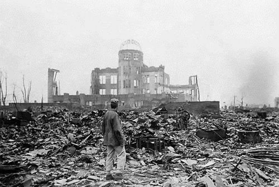

4가지 조각을 읽은 후, 어떤 생각이 떠올랐나요?
떠오른 '평화의 이미지'를 자유롭게 그려봅시다. 그림은 전쟁과 파괴의 흔적 위에 덧입혀지는 치유와 생명의 상징이 됩니다.
예를 들어, 깨끗한 물, 호수, 새로운 생명, 평화를 기원하는 꽃등 여러분의 '다시 살아가는 풍경'을 그려보세요.
각자의 그림은 하나의 기억이자 선언이 되어 4 peace를 방문한 다른 이들과 함께 평화의 메시지를 이어갑니다.
